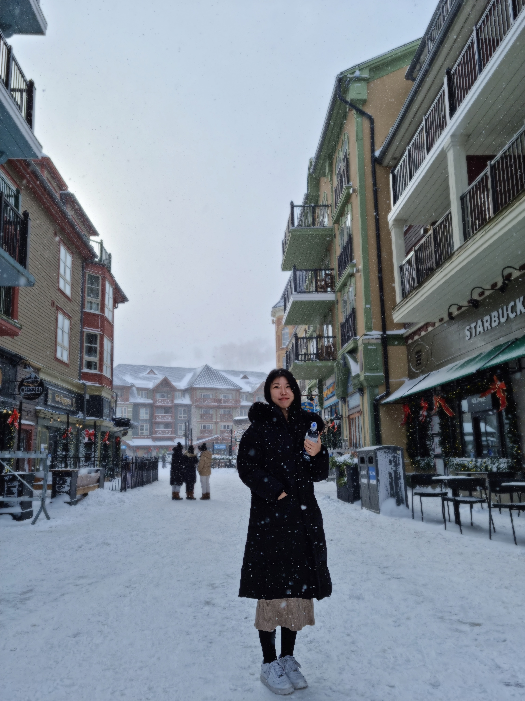

Yujin Park
Division of Data Science, Yonsei University (Mirae), Republic of Korea
- Office: Changjo Hall 170
- Email : yujinpark@yonsei.ac.kr
- Phone : 033-760-2246
- Google Scholar: Link
Education
Empoyment
Projects
Research Interest
Academic Service
Ad-hoc ReviewerAwards
Teaching
Yonsei University
Students
I am currently looking for motivated M.S. students and B.S. interns with interests in sufficient dimension reduction, functional data analysis, and statistical quality control. Students who are interested in joining my research group are encouraged to contact me via email at yujinpark@yonsei.ac.kr.